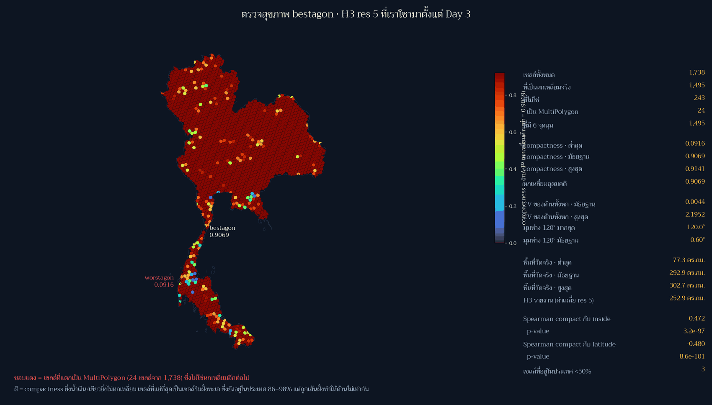
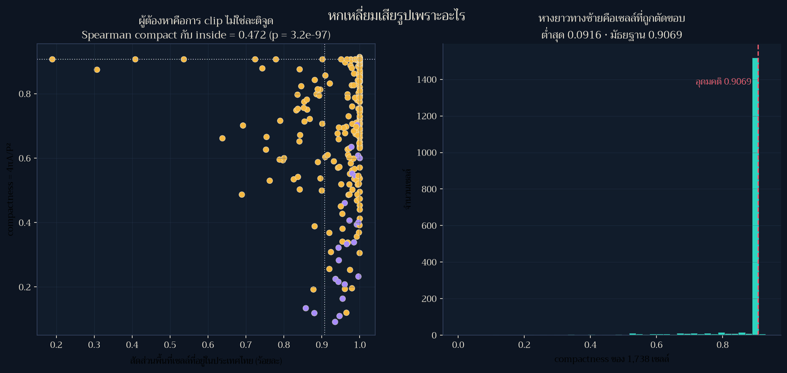
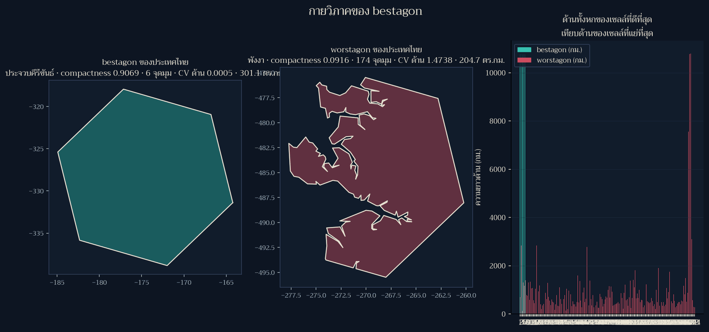

Day 20 · Hexagons — ตรวจสุขภาพ bestagon: H3 res 5 ของไทย 1,495 เซลล์เป็นหกเหลี่ยมจริง อีก 243 เซลล์ไม่ใช่ และตัวชี้วัดที่ผมใช้ตอนแรกให้คำตอบผิด

โจทย์ทางการวันนี้คือ “Hexagons, the good old bestagons.” (หัวข้อ Hexagons — ดึงข้อความมาจาก หน้า 30daymapchallenge.com อ่านสด 23:05 น. ของวันที่ 20 พ.ย.)
คำว่า “good old bestagons” ชวนให้ฉลองหกเหลี่ยม ผมขอทำอะไรที่ตรงข้ามกับการชม — ตรวจสุขภาพมัน เพราะกริด H3 res 5 ชุดเดียวกันนี้คือพื้นของ Day 3, 9, 10, 11, 12, 13, 16, 18 ทั้งซีรีส์ ถ้ามันไม่ใช่อะไรที่ควรเชื่อ ผมควรต้องรู้
ที่มาของแผนที่
วัดทุกเซลล์ของกริด Day 3 (1,738 เซลล์) ใน projection Equidistant Conic หน่วยเมตร ไม่มีบริการภายนอกในคืนนี้ — เป็นเรขาคณิตล้วน
| ตัวชี้วัด | นิยาม | ค่าในอุดมคติ |
|---|---|---|
| compactness | 4πA ÷ P² | วงกลม = 1 · หกเหลี่ยมด้านเท่ามุมเท่า = π√3/6 = 0.9069 |
| edge CV | ส่วนเบี่ยงเบนมาตรฐาน ÷ ค่าเฉลี่ย ของความยาวด้าน | 0 |
| angle deviation | ค่าสูงสุดของ | มุมภายใน − 120° |
| parts / vertices | จำนวนชิ้นและจำนวนจุดมุม | 1 และ 6 |
| inside share | พื้นที่หลัง clip กับ Natural Earth 10m ÷ พื้นที่เซลล์เต็ม | — |
ผลลัพธ์

๑. ส่วนใหญ่เป็นหกเหลี่ยมจริง — แต่ไม่ใช่ทั้งหมด
| จำนวน | |
|---|---|
| เซลล์ทั้งหมด | 1,738 |
| ที่เป็นหกเหลี่ยมจริง (1 ชิ้น, 6 จุดมุม, compactness ≥ 0.8969) | 1,495 |
| ที่ไม่ใช่หกเหลี่ยม | 243 |
| ที่แตกเป็น MultiPolygon | 24 |
| ที่มี 6 จุดมุม | 1,495 |
ในบรรดา 1,495 เซลล์ที่ผ่านเกณฑ์ของจริง: edge CV อยู่ระหว่าง 0.00053 ถึง 0.00829 (median ทั้งกริด 0.00439) และ มุมภายในห่างจาก 120° ไม่เกิน 1.177° — นี่คือหกเหลี่ยมที่ เกือบสมบูรณ์แบบทางตัวเลข ฝั่งตรงข้ามคือ edge CV สูงสุด 2.1952 และ มุมที่ห่างจาก 120° มากที่สุด 120.0° (คือมีมุมที่พับกลับจนกลายเป็นเส้นตรง)
compactness ทั้งกริด: ต่ำสุด 0.0916 · มัธยฐาน 0.90685 · สูงสุด 0.91411
๒. ตัวชี้วัดที่ผมใช้ตอนแรกให้คำตอบผิด
นี่คือส่วนที่มีค่าที่สุดของแผ่นนี้ ถ้าจัดอันดับด้วย compactness อย่างเดียว “bestagon” จะได้แก่เซลล์ 85416b9bfffffff (สกลนคร) compactness 0.91411 แต่เมื่อเปิดดูมันมี 9 จุดมุม ไม่ใช่ 6 — เพราะรูปที่มีด้านมากกว่าจะ กลมกว่า เสมอ และวงกลมคือเพดานของ compactness (1.0)
แปลว่า compactness อย่างเดียววัด “ความกลม” ไม่ใช่ “ความเป็นหกเหลี่ยม” ผมจึงต้องนิยามใหม่: คัดเฉพาะเซลล์ที่เป็นหกเหลี่ยมจริง (1 ชิ้น 6 จุดมุม) แล้วเรียงด้วย ความไม่สม่ำเสมอของด้าน ผลคือ bestagon ตัวจริงชื่อ
85643277fffffff— จังหวัดประจวบคีรีขันธ์ · edge CV 0.00053 · compactness 0.90690 · มุมห่างจาก 120° มากที่สุด 0.072°
ซึ่งคือหกเหลี่ยมด้านเท่ามุมเท่าเกือบสมบูรณ์ ต่างจากคำตอบแรกของผม 100% (บันทึกทั้งการจัดอันดับแบบผิดและแบบถูกไว้ใน day20_stats.json under metric_warning, roundest_by_compactness, bestagon_by_equal_sides)
๓. แล้วอะไรทำให้หกเหลี่ยมเสียรูป

| ความสัมพันธ์ (Spearman, n = 1,738) | rho | p-value |
|---|---|---|
| compactness กับสัดส่วนพื้นที่ที่อยู่ในประเทศ | +0.472 | 3.2e-97 |
| compactness กับละติจูด | −0.480 | 8.6e-101 |
| compactness กับ edge CV | −0.967 | ≈ 0 (ตรวจความสอดคล้องภายใน) |
ทั้งสองคำตอบถูกและมันไม่ตัดกัน: เซลล์ที่ถูกเส้นขอบตัดยิ่งเสียรูป และ ยิ่งอยู่ไกลละติจูด ศูนย์กลางของ projection ก็ยิ่งเสียรูป (Equidistant Conic ของซีรีส์วาง standard parallels ไว้ที่ 8°/20° ดังนั้นยิ่งไปทางใต้ของประเทศไทยยิ่งบิด)
แต่เคสที่สอนใจที่สุดคือ worstagon: 85643153fffffff จังหวัดพังงา compactness 0.0916 มี 3 ชิ้น และ 174 จุดมุม ทั้งที่ 93.5% ของพื้นที่ยังอยู่ในประเทศไทย แปลว่า “ถูกตัด” ไม่ใช่เรื่องเลวร้ายเท่า “ถูกตัดด้วยเส้นฝั่งทะเลที่หยัก” — เซลล์นี้ยังเป็นที่ของ อธิการ์เด้นแคมป์ปิ้ง ในการจับคู่ของ Day 3 แต่รูปทรงของมันไม่ใช่อีกต่อไป
๔. ของแถม: พื้นที่จริงของ H3 res 5 ในไทย
H3 รายงานว่า res 5 มีพื้นที่เฉลี่ย 252.904 ตร.กม. (ค่าเฉลี่ยทั้งโลก) แต่ที่วัดจริงในกริดนี้: ค่าเฉลี่ย 285.884 · ต่ำสุด 77.333 · สูงสุด 302.666 ตร.กม. คือใหญ่กว่าค่าเฉลี่ยที่ไลบรารีรายงานราว 13% — ถ้าเคยใช้ตัวเลข nominal ไปคำนวณความหนาแน่น ต่อตารางกิโลเมตร ควรใช้ตัวเลขที่วัดจริงแทน (Day 14 เจอแบบนี้แล้วครั้งหนึ่ง) และ 3 เซลล์ที่มีพื้นที่ในประเทศต่ำกว่า 50% ตรงกับที่ Day 15 นับได้ — ตรวจแล้วตรงกัน

วิธีทำแบบย่อ
- อ่านกริด Day 3 → แปลงเป็น Equidistant Conic (เมตร) ทั้งพื้นที่ เส้นรอบวง ด้าน และมุม
- compactness = 4πA/P² · edge CV = SD ÷ mean ของด้าน · angle deviation = |มุม − 120°| สูงสุด
- clip กับ Natural Earth 10m → inside share (วิธีเดียวกับ Day 15)
- จัดอันดับสองครั้ง: ครั้งแรกด้วย compactness อย่างเดียว (ได้คำตอบผิด) ครั้งที่สองคัดเฉพาะ 1 ชิ้น/6 จุดมุมแล้วเรียงด้วย edge CV (ได้ bestagon จริง)
- Spearman กับ inside share, ละติจูด, และ edge CV
- ตรวจ: assert ว่า compactness ≤ 1 · มัธยฐานต้องใกล้ 0.9069 · parts=1 กับ vertices=6 ต้องนับได้ 1,495 เท่ากัน · MultiPolygon ต้อง 24 · cells_below_half_inside ต้องเท่ากับ 3 ที่ Day 15 รายงาน
ข้อจำกัดที่ต้องบอกตรง ๆ
- การวัดด้าน/มุมของ MultiPolygon ใช้เฉพาะชิ้นที่ใหญ่ที่สุด จึงเห็นได้ว่าการเรียงด้วย compactness ยังให้รางวัลกับเซลล์ที่ “กลมเพราะมีหลายด้าน” — ผมเจอข้อนี้หลังรันครั้งแรก และเขียนวิธีแก้ไว้แทนที่จะปล่อยผ่าน
- projection มีผลต่อการวัดรูปทรง ทุกตัวเลขเป็นเมตรใน Equidistant Conic ที่ standard parallels 8°/20° ถ้าเปลี่ยน projection ค่า compactness จะขยับ (นี่คือเหตุผลที่ rho กับละติจูดไม่เป็นศูนย์ — บางส่วนคือความผิดของแผนที่ผม ไม่ใช่ของ H3)
angle_dev_max = 120.0°หมายความว่าบางเซลล์มีมุมที่กลับทิศจนเป็นเส้นตรง ซึ่งมักเป็น artifact ของการ clip ไม่ใช่รูปทรงจริงของสนาม- พื้นที่ 77.333 ตร.กม. (ต่ำสุด) เป็นเซลล์ที่ถูกตัดจนเล็ก ไม่ใช่เซลล์ที่ H3 สร้างเล็ก
- แผ่นนี้ไม่เกี่ยวกับความมืดของฟ้าเลย — เป็นแผ่นที่ตรวจเครื่องมือของตัวเอง ซึ่งผมคิดว่าจำเป็นกว่าการทำ hexmap สวย ๆ อีกแผ่น
ไฟล์ประกอบ
- day20_bestagon.png — แผนที่ compactness ของ 1,738 เซลล์ พร้อมขอบแดงที่ MultiPolygon
- day20_causes.png — compactness กับ inside share และการกระจายทั้งกริด
- day20_anatomy.png — กายวิภาค bestagon เทียบ worstagon (ด้านทั้งหก)
- day20_hexagons.csv — ทุกเซลล์: parts, vertices, compactness, edge CV, angle dev, พื้นที่, inside share
- day20_stats.json — ตัวเลขทั้งหมด +
metric_warning+ การจัดอันดับสองแบบ


บทเรียน
- ตัวชี้วัดที่ “ใช้ได้กับทุกอย่าง” มักไม่ตอบคำถามที่ตั้งไว้ — compactness เป็นตัวเลขที่ดี แต่มันตอบว่า “กลมแค่ไหน” ไม่ใช่ “หกเหลี่ยมแค่ไหน” และมันตอบแบบนั้นอย่างมั่นใจ ด้วยค่าสูงสุด 0.91411 ที่จริงแล้วคือรูปเก้าด้าน ถ้าผมไม่เปิดดูจำนวนจุดมุมของเจ้าของรางวัล ทั้งโพสต์จะยกให้เซลล์ผิดตัว
- ตรวจคำตอบของอันดับด้วยตาตัวเองหนึ่งเคสเสมอ — ผมเสียเวลาสามสิบวินาทีเปิดดูว่า bestagon ที่ได้ว่ามีกี่มุม แล้วทั้งแผ่นเปลี่ยน direction
- เครื่องมือที่ใชามาสิบเจ็ดวันควรได้รับการตรวจสุขภาพ — กริดเดียวกันนี้ผมใช้ทำแผนที่มา เกือบทั้งซีรีส์โดยไม่เคยถามว่าเซลล์ของมันมีกี่ด้าน วันนี้รู้ว่า 243 เซลล์จาก 1,738 ไม่ใช่อะไรที่ควรเรียกว่าหกเหลี่ยม และ 24 เซลล์แตกเป็นชิ้น